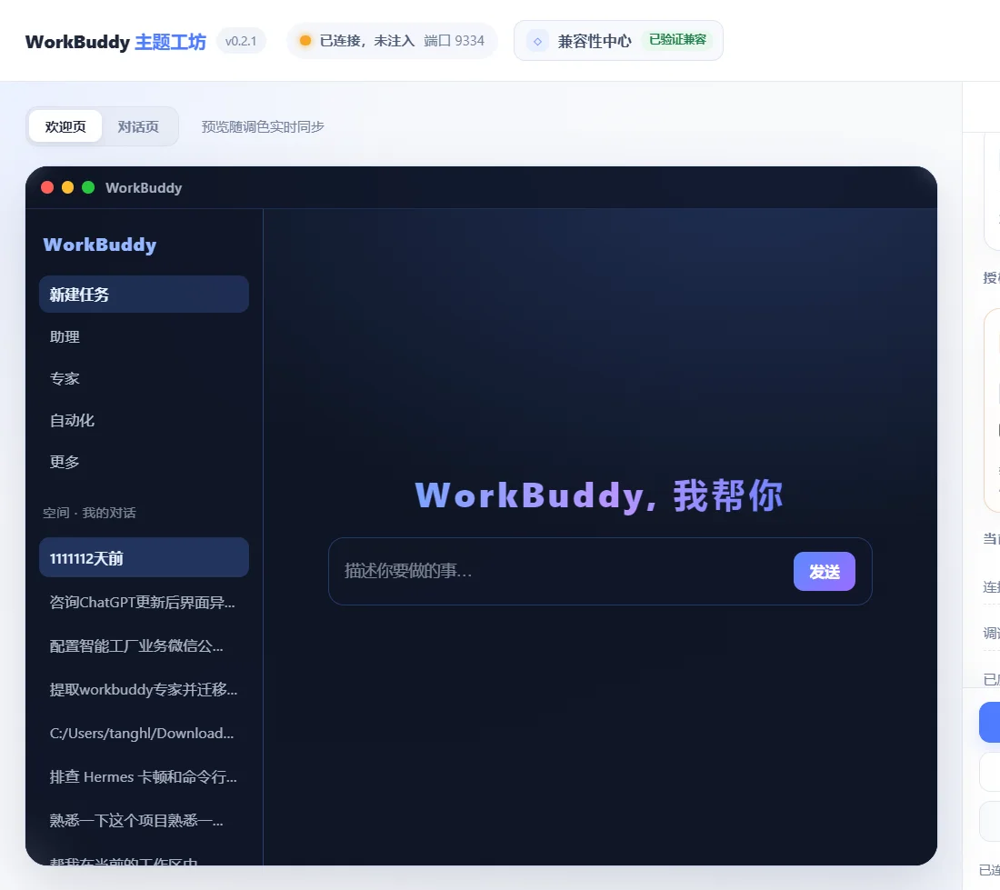
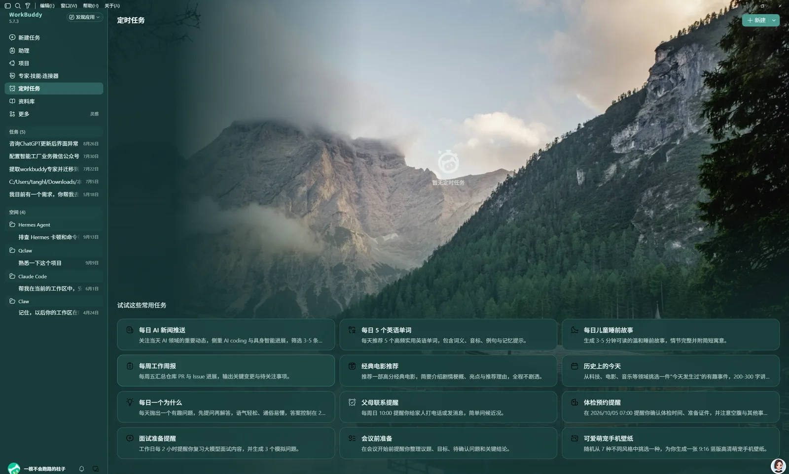
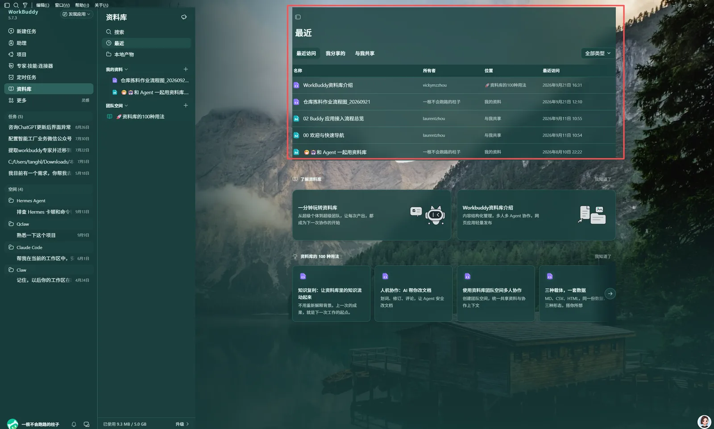

Windows 与 Linux 正式发行
让 WorkBuddy 的界面，
成为你的工作环境。
WorkBuddy 主题工坊是一款独立的本地界面个性化工具。无需手动改文件：选中主题、实时预览、确认后再一键应用。
独立第三方工具不修改 WorkBuddy 安装目录GitHub Releases 托管
真实运行界面v0.2.1

正在同步 GitHub 最新正式版
不是概念图，是真实工作流
01 / 实际界面先在工坊里确认，
再应用到 WorkBuddy。
主题工坊把“预览”和“应用”分开：你可以在软件里切换预设、调整颜色和透明度，满意后再写入当前客户端。即使 WorkBuddy 更新，也可以先检测兼容性，再决定是否恢复主题。
- 01实时预览欢迎页与对话页可切换查看，调整时即时反馈。
- 02主题参数可调颜色、模糊、透明度、圆角与背景均可在界面内完成。
- 03可恢复原生状态保留还原入口与兼容性检查，减少升级后的不确定性。

从配色到背景，统一到每一处状态
主题效果，不止换一张图。
主题会同步应用到侧栏、浮层、标签、文本和可点击状态；不把颜色留在孤立的局部。

从下载到应用，流程清楚可回退
02 / 三步上手不需要懂代码，
三步完成一次换肤。
整个过程在主题工坊中完成。软件会先检测连接状态；没有确认前，不会改动当前 WorkBuddy 的界面。
- 01
启动并连接
打开 WorkBuddy 后启动主题工坊。软件自动检查连接与兼容状态，也可以随时手动刷新。
先检测，再开始 - 02
挑选并微调主题
在预设中选择喜欢的方向，切换欢迎页或对话页实时查看；需要时再改颜色、背景与面板质感。
预览不等于写入 - 03
确认后应用
点击“应用到 WorkBuddy”才会生效。之后可保存、导出、还原；客户端更新时也可先检查兼容性。
支持还原与恢复
选择与你设备匹配的版本
软件下载
正在识别你的系统
推荐Windows
Windows x64
适用于绝大多数 Intel 与 AMD 电脑。
正在同步安装包
下载 Windows 安装包 —WindowsARM
Windows ARM64
适用于 ARM 架构的 Windows 设备。
正在同步安装包
下载 Windows 安装包 —Linux
选择 AppImage 或与你的发行版匹配的 DEB 包
LICENSE
购买、激活与换机
下载和授权，彼此独立。
安装包可公开下载；主题应用功能需要激活。这样既能让你先确认软件能运行，也能让授权和设备管理保持清晰。
- 01在店铺完成购买店铺商品正在配置中。
- 02在软件设置中输入激活码勾选协议后即可激活，软件只传输匿名设备摘要。
- 03换机前先解绑旧设备释放席位后，在新设备输入相同激活码即可继续使用。
安装前须知
少一点猜测，多一点确定。
- 这是 WorkBuddy 官方软件吗？
- 不是。本工具为独立第三方界面个性化软件，不代表 WorkBuddy 及其关联方。
- 下载后的第一步是什么？
- 先启动 WorkBuddy，再打开主题工坊；连接状态与兼容性结果会显示在软件顶部。确认预览后才点击应用。
- 软件能自动更新吗？
- Windows 与 Linux AppImage 会在软件内提示更新；DEB 由系统包管理器维护。macOS 版本发布前不作承诺。